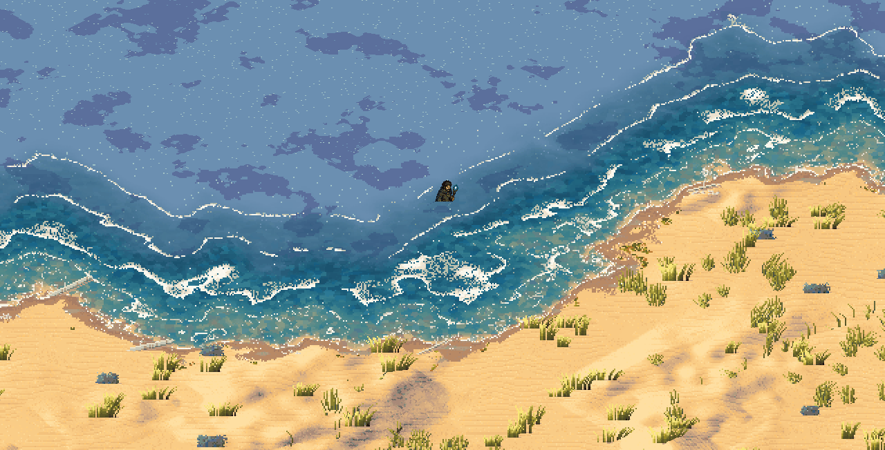
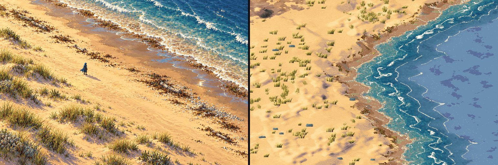
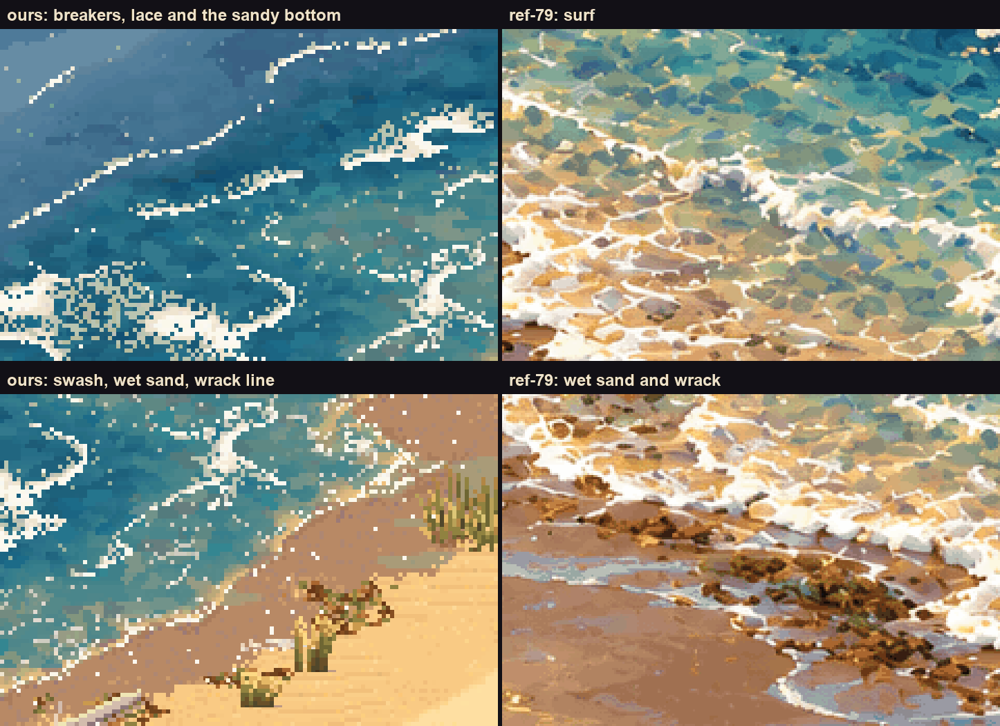
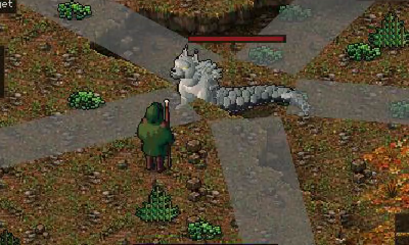
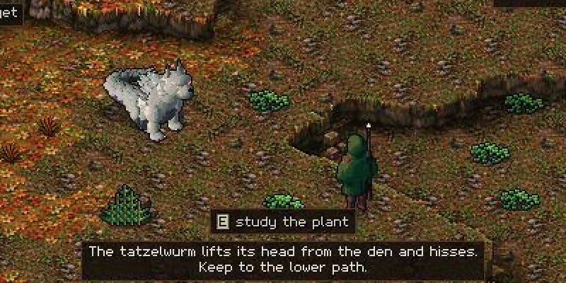
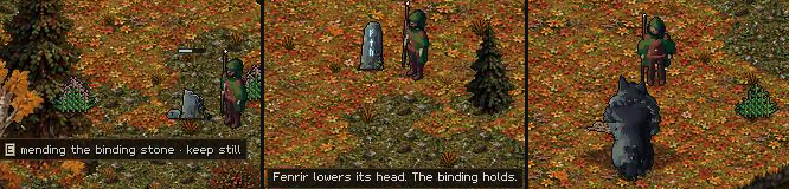
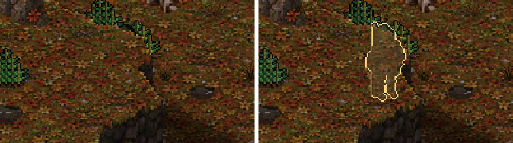
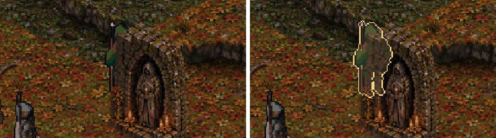

Day 19: a beach, a wurm and a peace with Fenrir
10 October 2026 · Day 19
The sixth land arrived: a beach of pale dunes and marram grass, running down through wet sand and foam into turquoise shallows. A second mythic creature, the cat-headed Tatzelwurm, now guards high stony ground, and Fenrir can be calmed instead of killed by mending its broken binding stones. You no longer vanish behind cliffs and walls, the painted world draws at a quarter of yesterday's cost, and the village now lives on the multiplayer server too.

In the game: the Beach. Dunes with marram grass, a wrack line of weed, wet sand, a lace of foam, and the shallows going from turquoise to deep blue. The player is out for a swim.
The Beach
Like the five lands before it, the Beach is built to match a reference painting. Before today, in the new style, a coast was drawn as the autumn woods' brown earth, with a stone wall dropping into a square blue sea. Now the sand slopes all the way down to the water, and the shore comes in bands, the way a real one does: dunes with marram grass and blue-grey sea holly, broad pale sand, a broken line of washed-up weed and driftwood, darker wet sand, the swash with its edge of foam, clear shallows over a sandy bottom, lines of breakers, and then open water. None of these bands follows the tile grid. They follow the shoreline, wherever it wanders.

Left, the painting; right, ours, at the same scale. The overall brightness now matches the painting almost exactly; before today the coast was a good deal darker.

Up close, ours on the left and the painting on the right: the breakers over the sandy bottom, and the swash, wet sand and wrack line.
The close-ups also show what is still missing. The painting's surf is broad, bright and tumbling, while ours is thin lines. Its shallows are a warm golden mottle over the sand, and ours are cooler. Past the shore the open sea is still the plain pale blue every coast uses. A second round is already open to fix all three: deeper water, real breakers and more dune plants.
The Tatzelwurm
The second mythic creature is the Tatzelwurm of Alpine folklore: a cat's furred head, ruff and forelegs on a long scaled body, about five metres of it, living on high stony ground. Fenrir is one of a kind, but the Tatzelwurm is a species. Every stretch of mountain that suits it has its own, and killing one leaves the others on their mountains.

The Tatzelwurm in a fight, mid-rake: the grey bands are runs of loose scree, and the player is standing in one of the safe gaps between them. (This is the older painted world; the creature works in either.)
It plays fair, like Fenrir. Come onto its ground and it lifts its head and hisses; turn back and it settles.

The warning. Every mythic creature warns before it hurts you.
Push on and it fights with three moves, each with a clear warning:
- The pounce. It crouches and flattens its ears, and the spot where it will land is marked on the ground. Step off the mark and it lands on nothing.
- The coil. It curls up tight, then lashes out all round and shoves anyone close a few tiles away. The shove stops short of a ledge rather than throwing you off it.
- The scree rake. It rears and drags its claws through the stones. Runs of loose scree slide down with safe gaps between them, and anyone who wades through them is slowed.
Run far enough and it breaks off and crawls home, still wounded. Kill one and you are Wurmslayer, and its body can be skinned for wurm scales, a new crafting material. Unlike Fenrir it has no named parts, because there are more of them.
It also tested a promise made with Fenrir: that every later creature would be mostly a profile, some art and three moves. That held. The Tatzelwurm needed one new kind of move, the leap, and nothing else new.
Fenrir, at peace
Fenrir now has an ending that is not a fight. Three broken binding stones stand in its outer territory, one on each side of its lair. Kneel at one and keep still for a few seconds, and it holds. Mend all three and Fenrir lowers its head and lets you be, for good. You can walk right up to where it sleeps.

Mending a broken stone (left), the last one holding (middle), and walking right up to Fenrir afterwards (right). Broken stones are dark stumps with a snapped chain; mended ones stand whole, their runes pulsing a pale blue.
The trick is to do it unseen. Asleep, Fenrir sees only a few tiles. If it catches you at a stone it warns you off. If it catches you again before it has calmed down, it attacks. Attack it after the peace and the stones crack, so the pact can be broken and mended again.
You no longer vanish
When something in front of you hid you, the game used to show a faint ghost of you, and often not even that: you simply disappeared behind a ridge, a shrine or a rock. Now you get a glowing gold outline, drawn over everything, whenever half of you is hidden. Allies are outlined in green, and wolves you might be fighting in orange.

Behind a ridge. Before (left), you are gone; now (right), you are outlined.

Behind a shrine. Before, only your staff showed.
Faster
The frame had quietly gone over its budget. It was drawing about 510 batches a frame in the village by day, against a budget of 185. The cause turned out to be the forged world's 72 portals, which were all drawn every frame whether you could see them or not, and the cliff edges, which switched textures two or three times along every row. Both are fixed, and the village is now drawn in about 120. Nothing on screen changed. Behind the scenes the new art's land building stopped creating garbage: memory churn while you walk into new land fell by about five times, and the longest pauses with it.
Meanwhile, elsewhere in the world
- The server. The village of Thornwick now lives on the multiplayer server. Its people go through their days and walk between home and work, never two to a tile, and a saved snapshot continues exactly where it left off.
- Research. A close study of fair combat showed that a leaping creature's warning can point somewhere other than where it actually lands, if something stops it short. That is now a ticket to fix before more leapers arrive.
What is next
A second round on the Beach for deeper water, real breakers and more dune plants. The Tatzelwurm still needs a peaceful way past (take the lower path and leave it nesting material), its youngster at the den, and claw marks and shed scales to warn you before you meet it. The desert, the mountains, the karst and the cloud forest are still waiting for their paintings to come true.